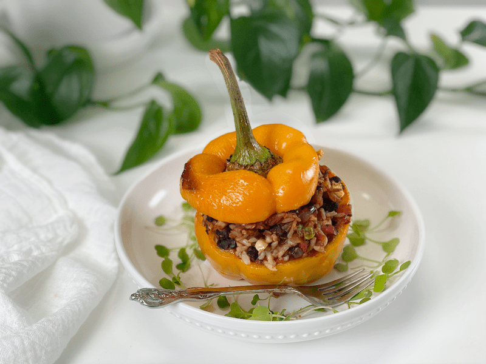
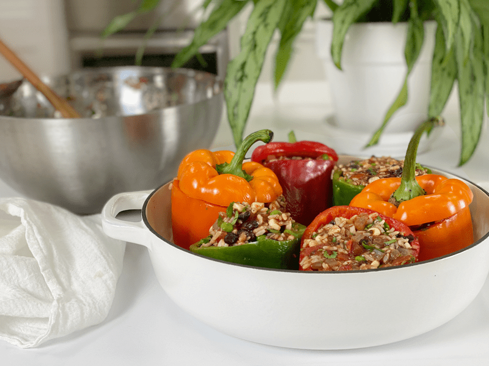
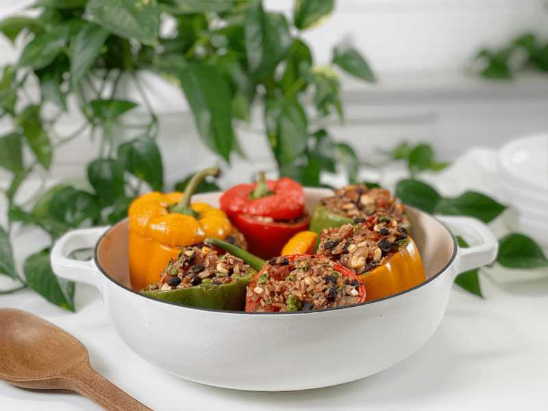
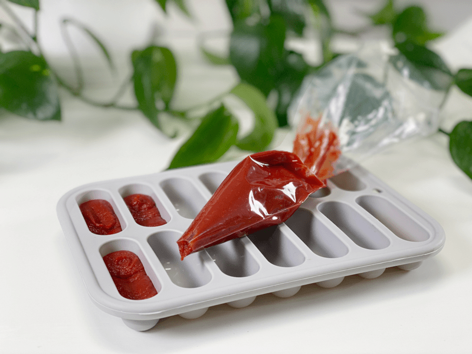

Stuffed Bell Peppers | Oil-Free

These bell peppers are stuffed with black beans, corn, peas, and rice with a gentle kick from chipotle peppers in adobo sauce. If you are seeking some good ol’ comfort food, you will love these hearty, filling, and oh-so flavorful stuffed peppers. They are vegan, gluten-free, nut-free, oil-free, soy-free…what else can I tell you that they are free from, except for flavor! I will NEVER skimp on flavor.

I have been craving stuffed bell peppers for quite some time—actually, my mom’s stuffed bell peppers. Every time I visit home, I put a request in, and every time I do, it slips through the cracks due to our jam-packed days. So, it was left up to me to create my own. Talk about perfect timing, because throughout the week, whenever I opened the fridge, I had these beautiful bell peppers staring back at me. And each passing day, they would gain a wrinkle or two (like me). Finally, I decided it was high time to do something with those beauties before I lost them. So, stuffed bell peppers it was!
Stuffed Pepper Tips
- When adding the chipotle peppers, start with one tablespoon, continue making the filling, then give it a taste test. These peppers can be a bit spicy, and if you are sensitive to heat, it’s best to add gradually because you can’t take it away once added.
- If you already cooked the dish and you find that it’s a bit too spicy, garnish it with diced avocado, since fats help to mellow out the heat in a dish.
- For a beautiful presentation, sprinkle fresh arugula microgreens around it. Their peppery taste pairs wonderfully with these stuffed peppers.
- Make sure to cook long enough for the bell peppers to soften.
- The filling is great on its own so if you don’t have any bell peppers…no problem! Spread the filling in a 9×13″ baking pan and bake as instructed below, minus a few minutes.
Well, I am going to leave you to it. You need to make this recipe, and I need to go do dishes. I hope your day is filled with joy and peace. amie sue
Ingredients
yields 5 servings
- 5 large bell peppers
- 1 1/2 cups diced yellow onion
- 1 Tbsp minced garlic
- 2 Tbsp minced chipotle peppers in adobo sauce
- 2 Tbsp tomato paste
- 1 cup organic corn
- 3/4 cup organic peas
- 1 (15-ounce) can black beans, drained and rinsed
- 2 cups packed cooked brown rice
- 1 (14-ounce) can fire-roasted diced tomatoes
- 1/2 cup loosely packed, chopped fresh cilantro
- 1 tsp sea salt
Preparation
Preparing the Bell Peppers
- Preheat oven to 350 degrees (F).
- Trim the bell peppers about 1/2 inch from the top and clean out the stem and seeds.
- Place the peppers, cut side up, on an 8×8″parchment-lined baking dish. Bake for 15 minutes.
- If you skip this process, it will take much longer to cook the dish as a whole.
- Set aside and allow the peppers to cool while you work on the rest of the recipe.
Cooking the Filling
- Preheat a frying pan with 2 tablespoons of water over medium heat. Once the water starts to steam, add the diced onions.
- Continue to stir, adding more water as it burns off, so the onions don’t stick to the pan and burn.
- Once the onions become translucent (about 4-5 minutes), add the minced garlic, chipotle peppers, tomato paste, corn, and black beans. Cook for 3 minutes and pour into a large mixing bowl.
- Be careful not to burn the garlic, or it will give the dish a bitter taste.
- If any of the ingredients are sticking to the pan, add a tablespoon or two of water to deglaze the pan. Deglazing helps to remove stuck food from the pan and adds flavor to the ingredients.
- Add the diced tomatoes, brown rice, and cilantro to the mixture and stir well to combine.
- Evenly fill each pepper with the rice mixture. If you have extra filling, you can either save it and eat it later as a side dish, or you can just pile those peppers high!
Baking
- Slide the peppers into the oven and bake for 35 minutes or until the peppers are tender.
- Remove the from the oven and enjoy immediately. Blow on that forkful; it’s going to be hot!
Storage for Leftovers (or if making ahead of time)
- Refrigerator: Store in an airtight container for up to 5 days.
- Freezer: To keep longer, store stuffed peppers in the freezer. Place the cooled stuffed peppers in an airtight, freezer-safe container, freezing for up to 3 months.
- To Reheat: Let thaw before reheating. Preheat the oven to 350 degrees (F) and place the peppers in a baking dish, warming them for about 15 minutes.
-

-
The peppers are ready to slide into the oven…
-

-
And now they are done and ready to be enjoyed.
-

-
Food Tip: If you have leftover tomato paste, freeze it in 1 Tbsp measurements. Once frozen, pop them out and put in a freezer-safe container.
© AmieSue.com